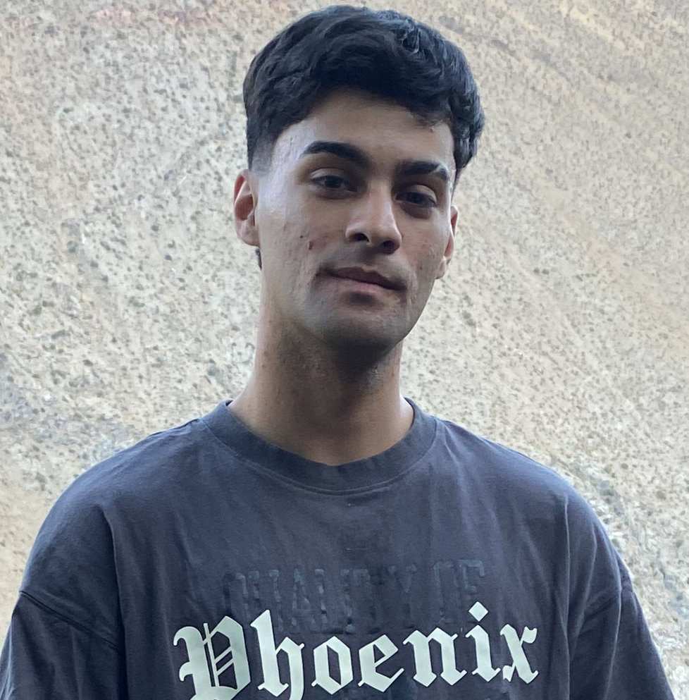

BASTIÁN VELÁSQUEZ EGAÑA
Estudiante de Ing. Civil en Informática y Computación
Hola, soy Basti, aunque algunos me conocen por mi nickname en videojuegos y en redes sociales: Miitsuki.
Actualmente, estoy en mi quinto año de Ingeniería Civil en Informática y Computación en la Universidad de Atacama. Mi meta a corto y largo plazo es convertirme en desarrollador full stack, por lo que complemento mis estudios universitarios con cursos de la academia online Mastermind, enfocados en el desarrollo web, para reforzar y ampliar mis conocimientos.
Si te interesa conocer más sobre mis proyectos relacionados con el desarrollo, te invito a visitar mi portafolio. Pero si quieres descubrir más sobre mis hobbies o mi faceta en internet, puedes explorar los enlaces que dejo más abajo, donde comparto proyectos de creación de videos y música bajo mi alias Miituski.
#FullStackDeveloper
#WebDevelopment
#ContentCreator
#Music
Último Proyecto
Página web para la aplicación móvil que detecta objetos en The Binding of Isaac.
Ver Proyecto